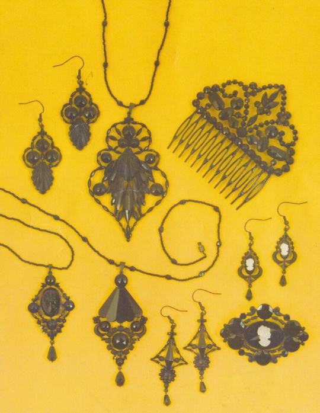

Traditioneller Gablonzer Glasschmuck seit 1882
Černá bižuterie
Schwarzer Schmuck gehört seit 1882 zu einem bedeutenden Zweig der Gablonzer Industrie. Seine Beliebtheit gipfelte um den Tod der englischen Königin Victoria (1901), als dieser Schmuck zum Trauerschmuck für die Länder des Britischen Empire wurde. Dieser Glasschmuck wird in Jablonec nad Nisou aus dem ursprünglichen Material gefertigt.
